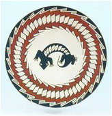
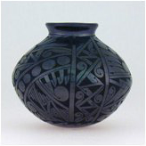
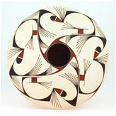
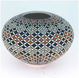
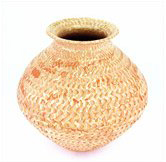

Mata Ortiz
|
||||||||||||||||||
|  | |
Mata Ortiz pottery comes from the high plains of Northern Mexico just below the American southwest. Like 20th century Native American pottery, it is the story of revival. However, this remarkable revival of the region’s ceramic tradition was begun by one man, Juan Quezada, and through him spread to much of a small remote river valley village, Juan Mata Ortiz, located in northern Chihuahua State.
Master potter Juan Quezada, a vaquero from Mata Ortiz, explored as a boy the mountains and valleys of the Casas Grandes region where he found shards of ancient pottery, sometimes elaborately painted, which became his source of inspiration. These were from the once great city of Paquimé (Mexico), which was inhabited around the same time as Mesa Verde (Colorado) and Chaco Canyon (New Mexico). Shards of Paquimé pottery have also been found in the southwest and Texas. Despite only a formal education to third grade, Juan wondered about the people who made the pottery and how it was done. At first he tried repairing some of the ancient pottery and later he attempted to make his own.
After many years of observation and experimentation, in 1970s Juan succeeded in recreating the whole pottery making process used in Paquimé over 500 years ago. This was a remarkable feat in a town where there was no current tradition of making pots and no one working as a potter. He had developed the techniques of locating and mining local clays, tempering the clay with sand, forming the pots, using minerals and clays for decoration, and firing the pots.
Spencer MacCallum, a trained anthropologist and art historian, noticed Juan Quesada’s work in a New Mexico trading post. Through MacCallum’s help and support Quesada found that he could support his family making pots. Juan taught what he had learned to his brothers and sisters. They in turn taught other family members and friends. Now over 300 of the town’s 1000 residents make pottery making potting the dominant occupation of the village. With many masters among this number, Mata Oritz pottery has been displayed in museum in the United States, Mexico, Japan, and Europe.
Many styles have emerged from the potters of Mata Ortiz and their work continues to evolve due to several factors. First, because there is no long-standing pottery tradition and second, because of the Mata Ortiz potters fire their pots individually. The solo firing, which differs from Southwestern Native American techniques, reduces the risk of experimentation.
|  |  | |
|  |  | |


| © 1995-2012 All Rights Reserved. Les Yeux du Monde |